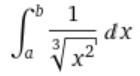
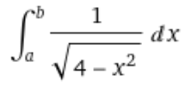

Integração com singularidade em um dos limites - Resolução por GaussLegendre
Início do intervalo:
Fim do intervalo:
Número de pontos:
Escolha a função a integrar:


Escolha o método a ser usado:
Exponencial Simples
Exponencial Dupla
Tolerância externa:
Tolerância interna:
Valor inicial do corte:
Executar